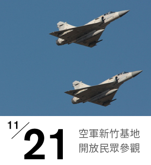

新竹市官網黑客松
新竹市為全台科技城市先驅，為創新數位城市發展，將以市府官網為主軸，透過〈2015新竹官網黑客松Hack Hsinchu〉活動方式，舉辦「新竹官方全球資訊網站設計競賽」，從中挖掘優秀創意與人才，優化市府官網使用者體驗，結合Open Data資源應用，達成快速蒐集市府官網創新雛形及意見的目的，激發新竹市創新能量。

新竹市為全台科技城市先驅，為創新數位城市發展，將以市府官網為主軸，透過〈2015新竹官網黑客松Hack Hsinchu〉活動方式，舉辦「新竹官方全球資訊網站設計競賽」，從中挖掘優秀創意與人才，優化市府官網使用者體驗，結合Open Data資源應用，達成快速蒐集市府官網創新雛形及意見的目的，激發新竹市創新能量。